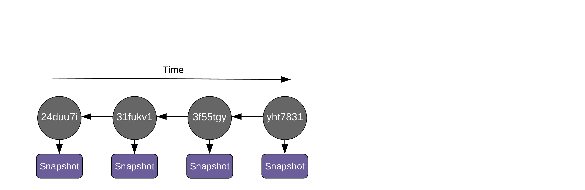
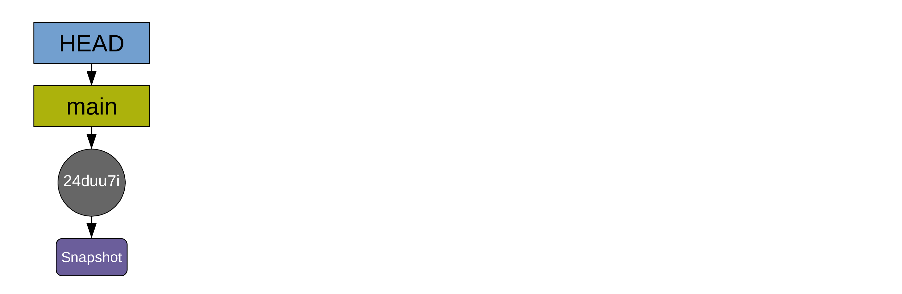
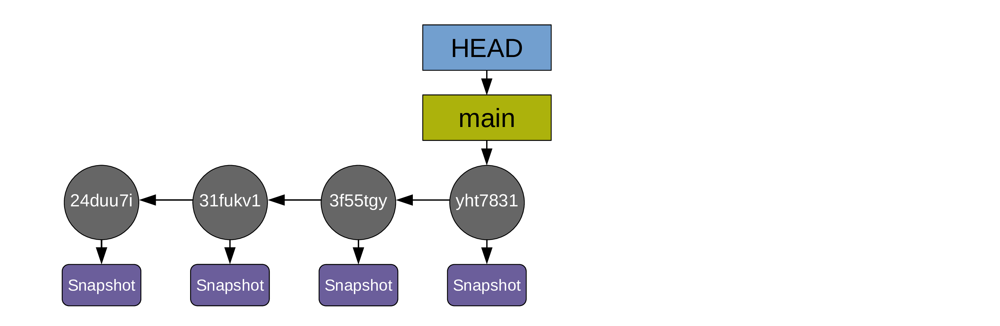

First steps
In this section, we will initialize our first Git repository, learn to explore it, and create a few commits.
Download mock data
Let’s download a mock project with a couple of files:
Navigate to your Download directory (with cd) and unzip the file with:
unzip project.zipYou should now have a project directory with a number of subdirectories and files. This is the project we will use today.
Enter the project:
cd projectInitializing a Git repository
Make sure to enter the project before initializing the repository.
cd projectNow, you can run the command that will turn your project directory into a Git repository:
git initInitialized empty Git repository in project/.git/Git is very verbose: you will often get useful feed-back after running commands.
When you run this command, Git creates a .git repository. This is where it will store all its files.
You can see that this repository was created by running:
ls -a.
..
.git
data
ms
results
srcIf you run git init in the wrong location, you can easily fix this: simply delete the .git directory that you created!
Git commands
All commands start with git.
A typical command is of the form:
git <command> [flags] [arguments]Example of a command we used to configure Git:
git config --global "Your Name"Creating commits
You can think of a commit as a snapshot of a particular version of your project.
You should create a new commit whenever you think that your project is at a point to which you might want to go back to.
Let’s create a first commit with the state of our chapter 3 before we do any more work to it:
git add .
git commit -m "Initial commit"To create a commit, we first need to add the file(s) we want to add to our commit to the staging area (also called “index”). This is done with the command git add. To add all the files, we can use git add . (. represents the current directory).
Once we have added some files to the staging area, we can create a commit. But each commit has a message associated to it. One way to add this message is to use the command to create commits (git commit) with the -m flag (for “message”). Here, our message is simply “Initial commit”.
Git saves the history of a project as a series of snapshots:

Those snapshots are called commits:

Each commit is identified by a unique hash and contains these metadata:
- author,
- date and time,
- the hash of parent commit(s),
- a message.
As soon as you create the first commit, a pointer called a branch is created and it points to that commit. By default, that first branch is called main:

Another pointer (HEAD) points to the branch main. HEAD indicates where we are in the project history.
We can now do some work in our chapter 3. For instance, let’s imagine that we are adding a result section to our chapter3.md file.
echo "
## Results
We now have a bunch of results in our markdown manuscript." >> ms/chapter3.mdMake sure to use >> here and not >: >> prepends content while > replaces any existing content.
If this new addition is important enough to justify making a new commit (how often you commit is up to you), we can do so:
git add ms/chapter3.md
git commit -m "Add result section to manuscript"[main 451c47b] Add result section to manuscript
1 file changed, 4 insertions(+)As you create more commits, the history of your project grows …

… and the pointers HEAD and main automatically move to the last commit:

For simplicity, the diagrams can be simplified this way:

Advice for great commit messages

from xkcd.com
- Use the present tense
- The first line is a summary of the commit and is less than 50 characters long
- Leave a blank line below
- Then add the body of your commit message with more details
Example of a good commit message:
git commit -m "Reduce boundary conditions by a factor of 0.3
Update boundaries
Rerun model and update table
Rephrase method section in ms"Future you will thank you! (And so will your collaborators).
Understanding the staging area
New Git users are often confused about the two-step commit process (first, you stage with git add, then you commit with git commit). This intermediate step seems, at first, totally unnecessary. In fact, it is very useful: without it, commits would always include all new changes made to a project and they would thus be very messy. The staging area allows to prepare (“stage”) the next commit. This way, you only commit what you want when you want.
Let’s go over a simple example:
We don’t always work linearly. Maybe you are working on a section of your manuscript when you realize by chance that there is a mistake in your script. You fix that mistake. On your next commit, it might make little sense to commit together that fix and your manuscript changes since they are not related. If your commits are random bag of changes, it will be very hard for future you to navigate your project history.
It is a lot better to only stage your script fix, commit it, then only stage your manuscript update, and commit this in a different commit.
The staging area allows you to pick and chose the changes from one or various files that constitute some coherent change to the project and that make sense to commit together.